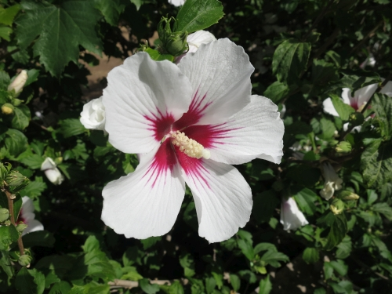

Jak na rychlost – příklad s filtrací obrázků
by Jiří Znamenáček
Úvod
Pro ilustraci principu použití Numby a Cythonu pro zrychlení vykonávání běhu pythoních programů a srovnání jejich přístupu použijeme aplikaci korelačního/konvolučního filtru na RGB-obrázek.
V praxi by to samozřejmě nikdo nedělal, protože příslušné operace jsou už dávno napsány v Céčku v několika externích knihovnách (především tedy samotném Pillow, kterou budeme používat pro načtení originálu a uložení výsledku operace), ale aplikace korelačního/konvolučního filtru je snad natolik názorná operace, že se k ilustraci hodí.
Zadání
Naším úkolem bude od vstupního obrázku..

..aplikací zostřovacího filtru..
$$ (\table -1, -1, -1; -1, 8, -1; -1, -1, -1) $$..dojít k výsledku:
Komentáře
Příslušný filtr se aplikuje na dvourozměrné pole $m×n$, náš obrázek je však RGB, konkrétně po načtení jako numpy-pole tvaru $375×500×3$. A protože numbajovský dekorátor @jit se pochopitelně aplikuje na funkce, napíšeme aplikaci filtru jako funkci nad dvourozměrným polem, přestože by totéž šlo napsat lineárně pomocí zanořené smyčky (přes příslušné tři vrstvy obrazu).
Uvedený korelační/konvoluční filtr má „problém“ v krajních řádcích a sloupcích, který z důvodů co nejjednoduššího kódu vyřešíme tak, že výstupní obrázek bude o tento okrajový rámeček menší (bude tedy mít rozměr $373×498×3$).
Vlastní zostření obrázku se provede jeho součtem s výsledkem aplikace zostřovacího filtru, celkově tedy budeme aplikovat filtr (masku):
$$ (\table 0, 0, 0; 0, 1, 0; 0, 0, 0) + (\table -1, -1, -1; -1, 8, -1; -1, -1, -1) = (\table -1, -1, -1; -1, 9, -1; -1, -1, -1) $$Pro načtení obrázku a uložení výsledku ve formátu JPEG použijeme příslušné funkce z knihovny Pillow.
Python + Numpy nevektorizovaně
Začněmež od čistého pythoního kódu, přičemž filtr budeme aplikovat zanořenou smyčkou (což samo o sobě hlásí pravděpodobný problém v řešení):
Doba provedení programu přibližně 1,8 sekundy.
Numba základní
S minimem úprav nevektorizovaného řešení (proklikněte si na odpovídající slajd!)..
..dosáhneme času přibližně 0,54 sekundy.
Numba s mezipamětí
Vliv předkompilování funkce je nepřekvapivě nezanedbatelný:
Při druhém a dalších spuštěních (první spuštění musí provést kompilaci a zapsat ji na disk) dosáhneme na čas kolem 0,35 sekundy.
PS: Parametr nopython=True nevyhodil výjimku, Numba si tedy se JITací kódu poradila a opravdu jsme nic dalšího upravovat nemuseli.
Cython I
To cythonizace už není vůbec tak jednoduchá (ač jsme v Python'u 3.x, musel jsem odstranit češtinu z názvů proměnných a také rozbalování n-tic rozdělit na samostatné řádky; o vyznačení typů ani nemluvím) a navíc pouhé doplnění typů..
..selže na výjimce:
filters.pyx:25:34: Invalid operand types for '*' (double[:, :]; long[:, :])
cython -a filters.pyx, ani jsem nemusel použít setup.py.
Cython II
Uvedená výjimka se týká kódu:
output[x, y] = (vyrez * maska).sum()
Cythonu se tedy nelíbí násobení matice maticí, kde jedna z nich je výřezem jiné (takže zjevně nepředstavuje kontinuální úsek paměti).
Cython III
Prvním pokusem o opravu budiž „přetypování“ funkcí np.array() na obě inkriminované proměnné vyrez a maska. Nyní už překlad python setup.py build_ext --inplace zabere:
Ovšem zrychlení se nekoná ‒ jsme na 3,1 sekundy, tedy dokonce ještě hůře než ten úplně základní a naivní kód v čistém Python'u!
Cython IV
Použití funkce np.asarray() tomu vůbec nepomůže ‒ výsledek je ještě horší, kolem 3,7 sekundy. Ostatně když se podíváme na protokol překladu cython -a filters.pyx..
..vidíme, že řádka 25 na nás svítí sytě žlutou, což uvnitř smyčky značí kardinální problém!
Cython V
Nezbývá nám tedy moc nic jiného, než náš originální program „rozvrtat“ ještě víc a uvedené jednořádkové násobení matic přepsat na smyčku:
Nyní už je protokol v pořádku ‒ žádná sytě žlutá uvnitř smyček:
A co to udělalo s rychlostí kódu? Spadli jsme na 0,14 sekundy!
Vektorizace kódu
Aplikace filtru ze čtvrtého slajdu (funkce apply_filter) je napsána pomocí pythoní zanořené smyčky, takže opravdu nebude rychlá (jak jsme ostatně viděli). Kromě přímočarého (a extrémně jednoduchého) zrychlení pomocí Numby a velmi nepřímočarého (a podle mě za to nestojícího) použití Cythonu, můžeme však udělat ještě jednu věc pouze za pomoci Pythonu a Numpy – zkusit řešení převést na numpy-vektorové (tedy míněno vícedimenzionální) operace.
Vektorizační „trik“ (odkoukaný od Nicolase P. Rougiera) spočívá ve skládání chytře posunutých pohledů na matici hodnot, kterými se na každou pozici výstupní (menší) matice nasčítají právě požadované „buňky“. Označme si jednu z výstupních buněk červeně a buňky, které se skládají na její výstupní hodnotu, světlejší červenou:
Pak následující kód (nechť M je naše vstupní matice)..
-M[0:-2,0:-2] - M[0:-2,1:-1] - M[0:-2,2:] -
M[1:-1,0:-2] + 9*M[1:-1,1:-1] - M[1:-1,2:] -
M[2: ,0:-2] - M[2: ,1:-1] - M[2: ,2:]
..způsobí nasčítání sobě si odpovídajících buněk stejně rozměrných pohledů na původní matici (zeleně jsou vyznačeny buňky příslušného výřezu a červeně odpovídající buňka přispívající do konečného součtu):
-
-
Uvedené (zelené) výřezy jsou všechny stejně veliké (a to o dva řádky a dva sloupečky menší než vstupní obrázek), proto je Numpy bez řečí sečte. Výsledná hodnota vybrané (červené) buňky je tedy složena z devíti různých hodnot a z nákresu je vidět, že to jsou právě ony požadované hodnoty, které dohromady určují náš konvoluční filtr.
Uvedené se stane se všemi buňkami výběrů, takže dohromady složí požadovanou výstupní (modrou) a stejně velkou matici.
Python + Numpy vektorizovaně
Nyní tedy nahraďme zanořenou smyčku vektorizovanou operací nad příslušným numpy-polem:
Doba provedení programu přibližně 0,16 sekundy!
Srovnání
Shrňme si výsledky našeho ukázkového příkladu:
| postup | čas (s) | faktor zpomalení |
faktor zrychlení |
|---|---|---|---|
| Python + Numpy (nevektorizovaně) | 1,8 | 13 | 1 |
| Numba | 0,54 | 4 | 3 |
| Numba + cache | 0,35 | 2,5 | 5 |
| optimalizovaný Cython | 0,14 | 1 | 13 |
| Python + Numpy (vektorizovaně) | 0,16 | 1,1 | 11 |
Rozdíly na poměrně rychlém stroji pro program, který už jako pythoní neběžel nijak dlouho, se mohou zdáti relativně malé. Nicméně na stroji pomalejším nebo při větším počtu opakování dané operace by už mohly být setsakra znát.
Závěr
Aplikace konvolučního operátoru na 2D-pole je poměrně reprezentativní příklad, takže z něj nějaký ten závěr můžeme asi celkem učinit:
-
Podaří-li se vám vaši úlohu pro Numpy zvektorizovat, máte skoro vyhráno! A nemusíte se tak většinou už o žádnou další optimalizaci pokoušet. (Záleží ovšem na konkrétním problému.)
📝Bohužel, vektorizace není většinou vůbec triviální. Kromě bezvadné znalosti Numpy vyžaduje spoustu zkušenosti. A/nebo nadprůměrné „google-fu“ při hledání řešení.
-
Nepodaří-li se vektorizace, máte (typicky) přinejmenším dvě další možnosti:
- Zabere-li na váš program Numba (a to klidně i v této nejjednodušší formě), rozhodně ji použijte ‒ za velmi málo práce docela dost koláčů! (Tím spíš, můžete-li využít cachování kompilace.)
- Je-li Numba málo (nebo na váš problém prostě zrovna nefunguje), můžete zkusit Cython. Už to nebude tak jednoduché a občas budete muset kód přiohnout způsobem, který byste nečekali, nicméně výsledek za to stát bude téměř určitě.